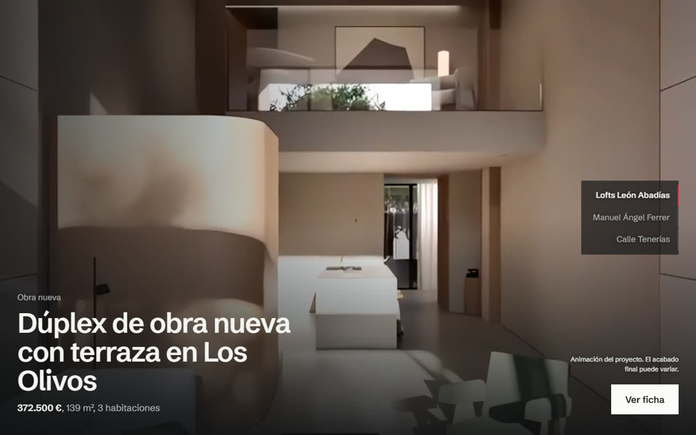
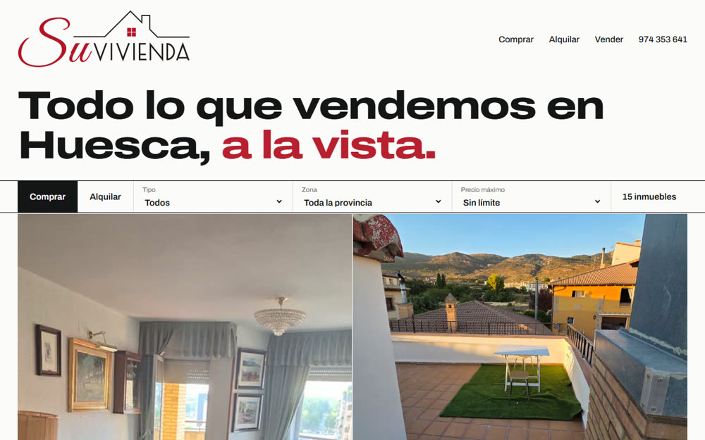
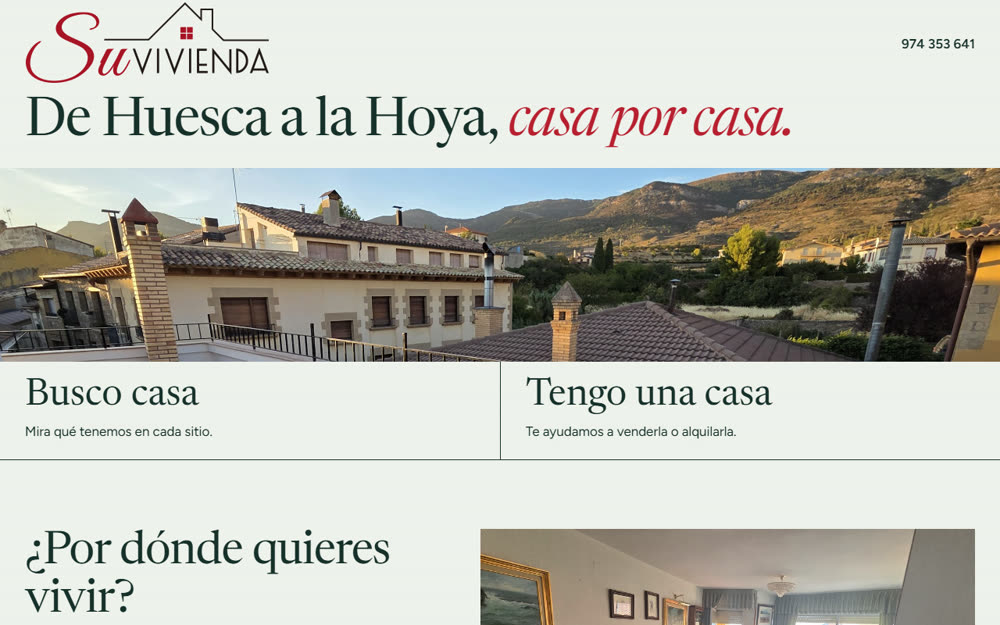

Recorrido
Al bajar por la página, recorres los lofts de obra nueva y entras andando en dos viviendas. Para quien quiere hacerse una idea desde el sofá.
Ver Recorrido
Al bajar por la página, recorres los lofts de obra nueva y entras andando en dos viviendas. Para quien quiere hacerse una idea desde el sofá.
Ver Recorrido
Toda la cartera a la vista, con filtros que funcionan y el precio en grande. Para quien ya está buscando.
Ver Escaparate
La página se ordena por pueblos y separa desde el inicio a quien busca de quien vende. Para reforzar la captación de propietarios.
Ver Hoya